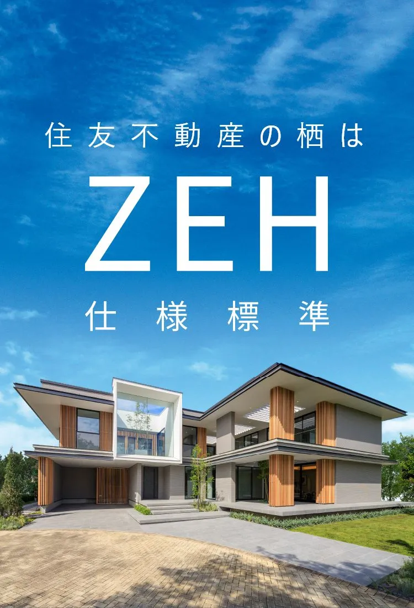
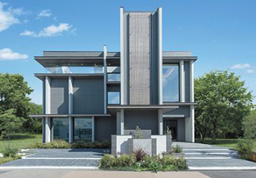
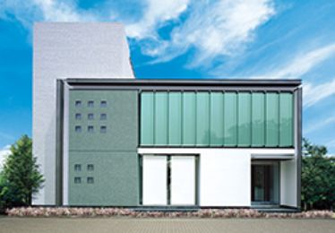
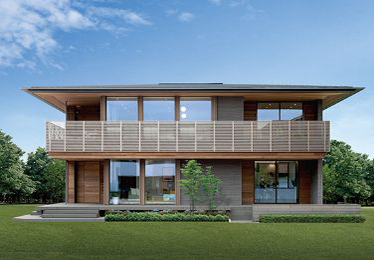
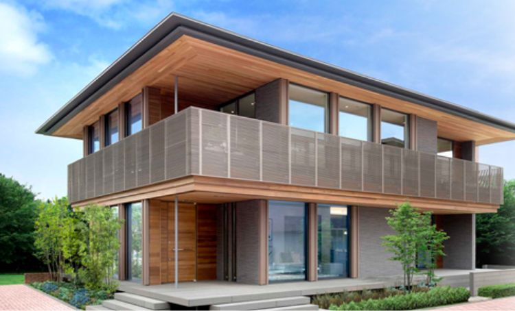
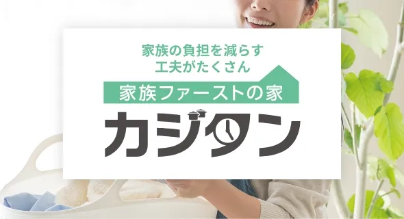
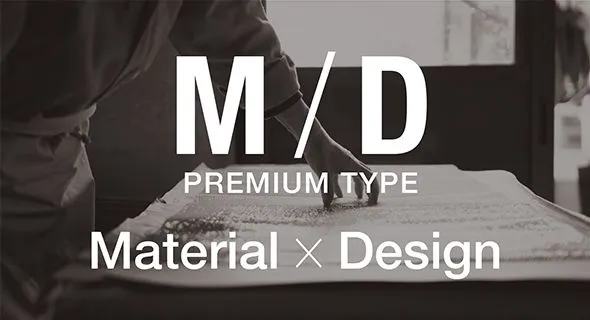
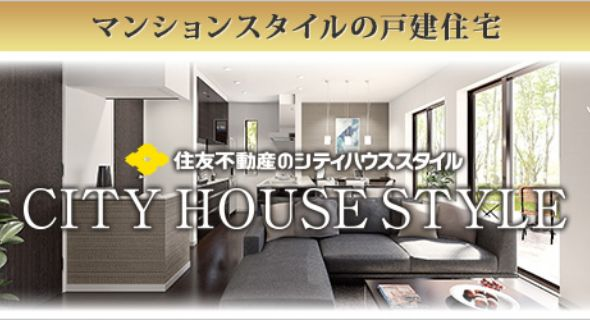

① 会社・基本データ
住友不動産は1949年設立の不動産総合デベロッパー。注文住宅は「J・URBAN」ブランドのもと全国で展開しており、2025年3月期は売上高1兆142億円・営業利益2,715億円と過去最高業績を達成している。

| 項目 | 内容 |
|---|---|
| 会社名 | 住友不動産株式会社（注文住宅事業部門） |
| 設立 | 1949年12月1日（泉不動産として設立） |
| 本社 | 東京都新宿区西新宿二丁目4番1号（新宿NSビル） |
| 資本金 | 1,228億円（2025年3月31日現在） |
| 売上高（連結） | 1兆142億円（2025年3月期・過去最高） |
| 営業利益 | 2,715億円（2025年3月期・過去最高／前期比+6.6%） |
| 完成工事事業 | 売上高2,047億円（前期比+5.2%／2025年3月期） |
| 注文住宅受注棟数 | 2,140棟（2025年3月期／前期比-82棟） |
| 累計供給実績 | 累計約15万棟（注文住宅＋リフォーム「新築そっくりさん」含む） |
| 従業員数 | 単体5,773名／連結13,844名（2025年3月期） |
| ブランド体系 | J・URBANシリーズ（住宅事業） |
| SNS | Instagram @sumifu_jurban（フォロワー約1.7万人・約310投稿） |
グループ・関連会社
- 住友不動産ステップ株式会社（仲介／2025年4月1日に「住友不動産販売」から社名変更）
- 住友不動産ハウジング株式会社（注文住宅・新築そっくりさん事業を統合／2025年4月1日設立・資本金30億円・従業員4,523名）
- 住友不動産ベルサール（イベント・会議事業）
- 住友不動産建物サービス（管理）
- 住友不動産ヴィラフォンテーヌ（ホテル）
2025年4月の組織再編に関する重要な注意
- 2025年4月1日付で、住友不動産本体の注文住宅・新築そっくりさん事業は子会社「住友不動産ハウジング」に統合された
- 同時に仲介子会社「住友不動産販売」は「住友不動産ステップ」に社名変更
- 本記事中の財務指標（売上高1兆142億円・営業利益2,715億円など）は2025年3月期（再編前）の住友不動産本体の連結/単体数値。2026年3月期以降は住友不動産ハウジングでの集計に切り替わる
- オリコン2026年のハウスメーカー注文住宅ランキングでも「住友不動産ハウジング」表記に統一されている
住宅業界での位置づけ
- 注文住宅着工戸数ランキング（2024年度）は1位大和ハウス、2位積水ハウス、3位プライムライフテクノロジーズ、4位一条工務店、5位ヘーベルハウス、6位セキスイハイム、7位タマホーム、8位住友林業の順。住友不動産は大手上位圏外で、年間2,140棟規模
- 「住宅メーカー」というより「不動産総合デベロッパー」。分譲マンション事業の売上が連結の中核を占める（シティタワー・シティテラスシリーズ等）
- 戸建注文住宅は「完成工事事業部門」の一部であり、賃貸・分譲・リフォームと合わせたシナジー戦略で展開
一言で言うと？
高級タワーマンションを大量供給する総合デベロッパーの住友不動産が、マンション仕込みのデザイン力と設備調達力を戸建に転用したハウスメーカー。Jアーバンのシャープなファサードが最大の差別化ポイントで、都市型・狭小地・3〜4階建てに強い。
② 商品ラインナップと坪単価
住友不動産の注文住宅は、すべて「J・URBAN（ジェイ・アーバン）」ブランドの傘下に整理されている。2026年現在の主なシリーズ構成は以下の通り。

PREMIUM.J

J・URBAN

J・RESIDENCE
出典: 住友不動産 J・URBAN公式サイト（www.j-urban.jp）
ブランド全体像（4グレード × 複数バリエーション）
| シリーズ | グレード位置 | 坪単価目安（2026年） | 主な特徴 |
|---|---|---|---|
| PREMIUM.J | 最上位 | 90〜130万円 | グッドデザイン賞受賞の集大成。高級マンション仕様の設備を標準化。富裕層・都市部向け |
| J・RESIDENCE | ハイグレード | 80〜110万円 | 深い軒・水平ライン・天然木の陰影。LDK天井高2.7m。フラットデッキ |
| J・URBAN | スタンダード | 65〜95万円 | 都市型住宅の代名詞。Fix小窓・マリオンガラス・エッジデザイン |
| 邸宅型住宅シリーズ | 高級和モダン | 100〜150万円 | 和の意匠×モダン。和風住宅特化 |
J・URBANシリーズ内のバリエーション
| 商品名 | 特徴 | 備考 |
|---|---|---|
| J・URBAN STYLE | J・URBANの標準型。モダンデザイン | リフォーム「新築そっくりさん」でも展開 |
| J・URBAN SQUARE | 角型シャープフォルム | 狭小地向け |
| 平屋 Design × Material | 平屋特化ライン | 延床20坪台〜 |
| 空間フル活用の家 | 3階建て・4階建て都市型 | 重量鉄骨も選択可 |
| 二世帯住宅 | 完全分離・部分共有選択可 | 玄関別・浴室別設計 |
| 賃貸併用住宅 | 賃貸部+自宅部 | 相続税対策に人気 |
| シティハウススタイル | 狭小地・3階建て特化 | 都市部の限定エリア商品 |
| カジタン（家事短） | 家事動線特化モデル | 共働き層向け |
| とってもクリーンな家 | 清掃性・衛生性特化 | ペット・アレルギー配慮 |
| 規格型住宅 | セミオーダー | コスト圧縮モデル |
工法別の坪単価目安
| 工法 | 坪単価目安 | 該当商品 |
|---|---|---|
| ウッドパネル工法（標準） | 65〜85万円 | J・URBAN主力ライン |
| ウッドパネルセンチュリー（上位版） | 80〜105万円 | 基礎180mm・国産檜・トリプルガラス採用 |
| 2×4工法 | 70〜95万円 | 耐震重視向け |
| 2×6工法（SPW構法） | 80〜110万円 | 壁厚140mm・スーパーパワーウォール |
| 重量鉄骨ラーメン構造（都市型） | 100〜150万円 | 3階建て・4階建て・狭小地 |
坪単価推移（J・URBAN標準仕様）
| 年 | 坪単価目安 |
|---|---|
| 2018年 | 55〜75万円 |
| 2020年 | 60〜80万円 |
| 2022年 | 65〜85万円 |
| 2024年 | 70〜95万円 |
| 2025年 | 75〜100万円 |
| 2026年 | 80〜110万円（オプション含む平均97.7万円という施主調査あり） |
規格型住宅
住友不動産にも「コストダウン型」のセミオーダー商品が用意されており、55〜70万円/坪で対応可能。ただし、デザイン・設備の選択幅は主力のJ・URBANより狭い。
③ 構造・工法
住友不動産の主力構造は「ウッドパネル工法」。加えて「2×4」「2×6（SPW）」「重量鉄骨ラーメン構造（都市型）」を用意し、敷地・階数・施主要望に応じて選択する。

ウッドパネル工法（住友不動産の看板工法）
「木造軸組工法」の骨組みに、「2×4的な面構造」を組み合わせた独自ハイブリッド構造。
| 項目 | 内容 |
|---|---|
| 構造形式 | 軸組+面パネル（ハイブリッド） |
| 耐力面材 | パーティクルボード（構造用合板の約2倍のせん断強度） |
| 接合金物 | 構造用接合金物（欠損面積大幅縮小タイプ） |
| 接合部強度 | 一般木造軸組の約1.5倍 |
| 特徴 | 2×4より間取り変更・リフォーム自由度が高い |
| 断熱材 | 高性能グラスウール24K（外壁105mm厚、屋根105mm×3層） |
ウッドパネルセンチュリー（上位工法）
ウッドパネル工法の強化版。以下の仕様アップグレードが標準。
| 項目 | 内容 |
|---|---|
| 基礎立上り幅 | 180mm（一般住宅は120〜150mmが標準） |
| 構造材 | 国産檜を採用 |
| 窓 | トリプルガラス（Low-E3層） |
| 特徴 | 耐久年数を大幅向上 |
パワーパネル
住友不動産が自社開発した高強度耐力壁パネル。1階部分に集中配置することで地震時の変形に粘り強く耐える。
| 項目 | 内容 |
|---|---|
| パネル強度 | 内周部壁倍率11.1倍（建築基準法の約5倍以上） |
| 導入効果 | 1階強度を重点強化。大開口リビングと耐震性能の両立 |
| 導入時期 | 2015年10月発表、以降上位商品に標準搭載 |
2×4工法
床・壁・天井の6面体ボックス構造。面全体で外力を分散するため、繰り返し地震に強い。
2×6 スーパーパワーウォール（SPW）構法
2×4工法の外壁にさらに1枚の構造用パネルを加えることで外壁耐震性を約30%アップ。断熱層も厚くなるため、断熱性能の面でも有利。
重量鉄骨ラーメン構造（3〜4階建て都市型）
狭小地や3階建て・4階建て対応のための重量鉄骨ラーメン。住友不動産の分譲マンション事業で培った構造設計ノウハウを戸建にフィードバックしている。
耐震性の序列（住友不動産の工法内）
2×6 SPW ＞ 2×4 ＞ ウッドパネル工法（パワーパネル搭載時） ＞ ウッドパネル標準
ARCHIST視点
住友不動産の構造ラインナップは多彩だが、実際の選択肢は「敷地と予算で半自動的に決まる」傾向が強い。狭小地・都市部なら重量鉄骨ラーメン、郊外の標準地ならウッドパネル、耐震最優先なら2×6 SPWという棲み分け。
④ 耐震性能
| 項目 | 内容 |
|---|---|
| 耐震等級 | 標準で等級3（最高等級）取得可能 |
| 2×4・2×6 SPW | 面構造で揺れを面全体で受け止める。繰り返し地震に強い |
| ウッドパネル＋パワーパネル | 1階壁倍率11.1倍で変形抑制。木造軸組の1.5倍の接合強度 |
| 基礎 | ベタ基礎標準。ウッドパネルセンチュリーは立上り180mm |
| 制震装置 | オプションで「ブレースダンパー」等選択可 |
繰り返し地震への対応
熊本地震（2016年4月）のような「震度7クラスが2回連続で襲来するケース」を想定し、2×4系は構造躯体が面でエネルギーを分散するため有利。ウッドパネルは軸組寄りの特性だが、パワーパネルの導入で耐震等級3相当を確保できる。
実棟実験データ
住友不動産は一条工務店ほど派手な実大振動実験のPRは行っていないが、以下の実験・検証が公表されている。
- パワーパネル単体: 壁倍率11.1倍（法定最大値5倍の2倍以上）を第三者試験機関で取得
- 2×4工法: 住宅金融支援機構・日本ツーバイフォー建築協会による耐震検証データを活用
- 2×6 SPW: 1枚追加壁による30%性能アップを社内実験で検証
正直なところ
一条工務店のE-ディフェンス加振試験（253回）のような「建物まるごとの実大実験」はウェブ上で公表されていない。耐震性能の裏付けは「部材レベルの試験データ」が中心。
⑤ 断熱性能
UA値（外皮平均熱貫流率）
| 商品・工法 | UA値 | 断熱等級 |
|---|---|---|
| 断熱等級7仕様（最上位オプション） | 0.25 W/m²K | 等級7 |
| 2×6 SPW（標準） | 0.37（公式値） | 等級6 |
| 2×4工法（標準） | 0.46 | 等級5 |
| ウッドパネルセンチュリー | 0.50前後（推定） | 等級5 |
| ウッドパネル（標準） | 0.60〜0.70 | 等級4〜5 |
| （参考）国の省エネ基準（5〜7地域） | 0.87 | 等級4 |
断熱材の仕様（ウッドパネル工法・標準）
| 部位 | 断熱材 | 厚さ |
|---|---|---|
| 外壁 | 高性能グラスウール24K | 105mm |
| 屋根 | 高性能グラスウール24K | 105mm × 3層（合計315mm） |
| 床 | 住宅用グラスウール32K | 80mm |
窓の仕様
| 仕様 | 標準 | オプション |
|---|---|---|
| ガラス | アルゴンガス入りLow-E複層ガラス（16mm層） | トリプルガラス（ウッドパネルセンチュリー標準） |
| サッシ | アルミ樹脂複合サッシ | オール樹脂サッシ |
| 断熱性能 | 一般複層ガラスの約2.5倍 | トリプルで約5倍 |
断熱等級7商品（2024年発表）
住友不動産は断熱等級7対応の特別仕様を用意している。UA値0.25を達成するために以下を全投入:
- オール樹脂トリプルガラスサッシ
- 外壁・屋根・床の断熱材を大幅増厚
- 超断熱玄関ドア
- 換気システムを高効率第1種全熱交換型に変更
ただし標準価格から坪+10〜20万円のコストアップとなるため、導入率は低い。
他社との断熱性能比較
| ハウスメーカー | UA値（代表値） | 断熱等級 | C値公表 |
|---|---|---|---|
| 一条工務店 i-smart | 0.25 | 等級7 | 0.59（全棟） |
| スウェーデンハウス | 0.38 | 等級6 | 非公表 |
| 三井ホーム | 0.43 | 等級5〜6 | 非公表 |
| 住友林業 | 0.46 | 等級5 | 非公表 |
| 住友不動産（2×6 SPW） | 0.37（公式） | 等級6 | 非公表 |
| 住友不動産（ウッドパネル標準） | 0.60〜0.70 | 等級4〜5 | 非公表 |
| 住友不動産（断熱等級7仕様） | 0.25 | 等級7 | 非公表 |
| 積水ハウス（木造） | 0.46〜0.60 | 等級5 | 非公表 |
| ヘーベルハウス（鉄骨） | 0.55〜0.60 | 等級5 | 非公表 |
正直なところ
標準仕様のウッドパネル工法は、断熱・気密面で他の大手HMにやや見劣りする。「断熱性能で選ぶなら一条工務店・スウェーデンハウス、住友不動産は2×6 SPWまたは断熱等級7仕様を選ぶ必要がある」というのが実態。契約前に必ずUA値・C値の数値を書面で要求すること。
⑥ 気密性能
住友不動産の気密測定スタンス
| 項目 | 住友不動産 | （参考）一条工務店 |
|---|---|---|
| C値公表 | 非公表 | 0.59（全棟平均） |
| 全棟測定 | 実施せず（希望者のみ有償対応の場合あり） | 全棟実施 |
| 中間測定 | なし | あり |
| 測定結果開示 | 原則なし | 報告書で開示 |
工法別の気密性傾向（実測値の推定）
| 工法 | C値推定 | 備考 |
|---|---|---|
| 2×6 SPW | 1.0〜1.5 | 面構造で隙間が出にくい |
| 2×4 | 1.0〜2.0 | 面構造の恩恵あり |
| ウッドパネルセンチュリー | 1.5〜2.5 | 軸組要素があり2×4より緩い |
| ウッドパネル標準 | 2.0〜3.5 | 軸組寄りで施工精度依存 |
住友不動産の気密で注意すべき点
- 全棟測定を行わないため、施工者・現場監督の腕に気密性能が依存する
- 「機密性が高いと謳っていたのに冬めちゃくちゃ寒い」という施主の声が口コミに複数存在
- 契約前に「C値の保証値はあるか」「実測してもらえるか（有償でも）」を書面確認することを強く推奨
⑦ 換気システム
| 項目 | 内容 |
|---|---|
| 標準換気 | 第3種換気（排気型）が基本。商品によって第1種換気も選択可 |
| オプション | 全熱交換型第1種換気（熱交換効率70〜85%） |
| 花粉・PM2.5対策 | 高性能フィルター（オプション） |
| 全館空調 | 「エアテクト」等の全館空調オプション対応（大規模プラン向け） |
他社との違い
一条工務店の「ロスガード90」（熱交換効率90%・全棟標準）や三井ホームの「スマートブリーズ」に比べると、住友不動産の標準換気は見劣りする。冬の熱損失・夏の熱侵入を抑えたい施主はオプション追加が必須。
⑧ ZEH・省エネ
| 項目 | 内容 |
|---|---|
| ZEH対応 | ◯（オプション仕様） |
| ZEH達成率 | 公表なし（住友林業96%、積水ハウス90%超と比べ低いとみられる） |
| 長期優良住宅対応 | ◯（オプション仕様） |
| 太陽光発電 | オプション搭載可（5〜10kWが主流） |
| 蓄電池 | オプション（7〜10kWh） |
| HEMS | オプション |
住友不動産のZEH戦略
住友不動産は「注文住宅中心ではなく、分譲マンションのZEH-M化」に経営リソースを集中しており、戸建注文住宅のZEH率公表や義務化は他社より遅れ気味。
- 分譲マンション（シティタワー・シティテラス）では「ZEH-M Oriented」などの認証を進めている
- 注文住宅部門のZEH率・ゼロエネ住宅の訴求は「希望者ベース」にとどまる
ARCHIST視点
光熱費ゼロや太陽光発電重視の施主は、一条工務店・積水ハウスを先に検討するほうが合理的。住友不動産はZEHを「オプション」として扱っているのが現状。
⑨ デザイン・外観
住友不動産の最大の強みがここ。グッドデザイン賞受賞の常連。

Jアーバンの外観

インテリア
出典: 住友不動産 J・URBAN公式サイト（www.j-urban.jp）

Jアーバンのデザインコンセプト
「都心のオフィスビル・タワーマンションのデザインを戸建に転用する」という思想。2003年にグッドデザイン賞を初受賞して以降、シリーズ累計で10回以上の受賞歴がある。
代表的なデザイン要素
| 要素 | 説明 |
|---|---|
| マリオンガラス | ブルーグリーンの縦連窓。J・URBANの象徴的ファサード |
| Fix小窓（ライトウォール） | 採光と防犯性を両立する連続小窓 |
| エッジデザイン | 角を強調するシャープなフォルム |
| 深い軒 | J・RESIDENCEの特徴。陰影と日射制御 |
| フラットルーフ | 箱型のモダン外観 |
| 天然木パネル | 深い軒下に配する温かみ演出 |
| 水平ライン | 横の広がりを強調する意匠 |
インテリア
- 高級マンション事業で培った内装コーディネートノウハウを活用
- 住友不動産シスコン（専属インテリア子会社）によるトータルコーディネート
- LDK天井高2.4〜2.7mが標準（PREMIUM.Jは2.7m）
- 大理石調タイル・無垢風フローリング・造作家具に強い
設備の選択肢（注意点）
メーカーのラインナップは豊富だが、住友不動産オリジナル設備ではなく「大手メーカー品からの選択」というスタイル。
- キッチン: LIXIL・パナソニック・タカラスタンダード・トクラス等から選択
- バス: TOTO・LIXIL・パナソニック等
- 床材・建具: 同じく大手メーカー品
一条工務店のような「設備まで自社開発」ではなく、「選択肢があるように見えるが、マンション仕様の特注設備を標準とする分、カスタム可能範囲は意外と狭い」という特徴。
Instagram戦略
@sumifu_jurban（住友不動産公式）では完成事例・インテリア写真を中心に発信。投稿数310超、フォロワー1.7万人。ハッシュタグ #jアーバン #sumifu_jurban で施主投稿も多数。
⑩ 保証・アフターサービス
| 項目 | 内容 |
|---|---|
| 初期保証（構造躯体） | 10年（住友不動産の公式アフターサービスで構造躯体の初期保証は10年） |
| 初期保証（防水） | 10年 |
| 最長保証 | 60年（10年ごとの有償メンテを継続することで最長60年まで延長可） |
| 無償点検 | 引渡後3ヶ月・1年・2年・10年（その後10年ごと） |
| シロアリ保証 | 初期10年、その後5年ごとに有償点検・処理 |
要注意: 60年保証の最重要落とし穴
住友不動産の60年保証で最も多い「後悔」は10年目のメンテナンス費用。
- 60年保証を延長するには、10年ごとに住友不動産指定の有料メンテナンスを実施する必要がある
- 10年目の目安費用: 約100〜200万円（外壁・屋根・防水・シーリング・防蟻の状況による）
- このメンテを行わないと: ①保証延長権を失う、②以降の無償点検権も失う
- 100〜200万円という費用を建築時の資金計画に含めていない人が後悔するケースが非常に多い
他社との保証期間比較
| ハウスメーカー | 初期保証（構造） | 最大延長 | 特徴 |
|---|---|---|---|
| 積水ハウス | 30年 | 永年（ユートラス） | 建物ある限り延長可 |
| 一条工務店 | 30年 | 30年 | シロアリ予防10年・20年無償 |
| 住友林業 | 30年 | 60年 | 96.3%が長期優良住宅取得 |
| ヘーベルハウス | 30年 | 60年 | ロングライフ思想・ホームドクター |
| 住友不動産 | 10年 | 60年 | 10年ごと有償メンテ必須／初期保証は業界最低水準 |
| 三井ホーム | 10年 | 60年 | 有償点検・メンテで延長 |
| タマホーム | 10年 | 60年 | 長期優良住宅取得時 |
アフターサービスの注意点
口コミ・施主ブログでは以下の報告が目立つ:
- 「修理依頼から完了まで3ヶ月以上かかった」
- 「折り返し連絡が1週間後、訪問が1ヶ月後」
- 「10年目のメンテ費用が事前説明より高かった」
ARCHISTからのアドバイス
契約前に「①10年後のメンテナンス費用目安（最低値・最高値）」「②保証延長に必要な最低費用」「③アフターサービスの初回連絡目安時間」を書面で確認することを強くお勧めします。
⑪ 建築期間
| フェーズ | 期間目安 |
|---|---|
| 展示場見学〜仮契約 | 1〜3ヶ月 |
| 仮契約〜本契約（間取り打合せ） | 3〜6ヶ月 |
| 本契約〜着工（詳細設計・確認申請） | 2〜4ヶ月 |
| 着工〜上棟 | 1〜2ヶ月 |
| 上棟〜引渡し | 3〜5ヶ月 |
| 合計（初回来場〜引渡し） | 10〜14ヶ月 |
| 着工〜引渡し | 4〜6ヶ月 |
建築期間の注意点
- 住友不動産は現場施工の比率が高く、天候・職人手配の影響を受けやすい
- 都市部の3階建て・4階建てでは、隣地との調整・道路占有許可で遅れが出る傾向
- 繁忙期（春・秋）は着工待ちが発生することもある
⑫ 客層・どんな人が選ぶか
| 属性 | 傾向 |
|---|---|
| 年齢層 | 30〜50代（40代がボリュームゾーン） |
| 収入層 | 中〜高（世帯年収800万〜2,000万円） |
| 世帯構成 | 夫婦のみ〜子ども1〜2人の小家族が多数 |
| 居住地 | 都市部・狭小地・駅近の建替えが多い（東京・大阪・名古屋の23区内・市街地） |
| 志向 | デザイン第一・ブランド重視・「ここに住んでいる」という自己表現 |
| 検討期間 | 6ヶ月〜1年（モデルハウス来場から契約まで） |
J・URBANの購入決定理由（多い順）
- 外観デザインが気に入った（最多・約40%）
- 住友グループへのブランド信頼感（約25%）
- 都市部・狭小地に強い提案力（約15%）
- 標準設備のグレードの高さ（約10%）
- その他（約10%）
向いている人
- デザイン・外観を最重視する方
- 都市部の狭小地・難しい敷地
- 3階建て・4階建てを検討中
- 高級マンション的な設備グレード希望
- 土地探しから一貫サポート希望
- 住友ブランドへの信頼感がある方
向かない人
- とにかく価格を抑えたい人
- 郊外・農村エリアの方
- 断熱・気密を数値で比較したい方
- ZEH・光熱費削減を最優先する方
- 自然素材・無垢木の温もり重視の方
- アフター手厚さを優先する方
愛知県での展開
- 名古屋支店・豊田住宅展示場・岡崎住宅展示場・一宮住宅展示場に拠点
- 都市部（名古屋市中区・東区・名東区）を中心に施工実績あり
- 郊外・農村地域は住友林業・一条工務店・地元工務店に比べて実績が少ない
⑬ 営業・値引き攻略
値引きの実態
- 住友不動産は業界の中でも値引きに応じにくいHMの一つ
- 標準的な値引き率: 〜5%が現実的な上限
- 「売り急がない」スタンスをとっており、値引きよりブランド維持を優先
- モニターハウス値引き（「モデルハウスとして写真使用させてください」）は正規の値引き手段として検討余地あり
- 決算期（3月・9月）のキャンペーン期間は値引き余地が若干広がる
注意: 営業担当の質のバラつき
- 営業職の平均年収: 900万円超（完全歩合制に近い体系）
- 「ノルマが厳しく、口約束で話を進めてしまうケース」の報告が多い
- 「営業がフロントとなり、設計士とは直接話せない」設計士との間の伝達ミスが多発
- 重要事項は必ず書面で確認すること（口頭での約束は信頼しない）
マンションデベロッパー系ならではの営業スタイル
住友不動産は注文住宅専業ではなく「不動産総合デベロッパー」。営業担当者は分譲マンション・投資用不動産を経験したキャリアの人が多く、「土地から建物まで一括で提案する」スタイルに長けている。一方で、「住宅性能の数値説明」や「施主一人ひとりに寄り添う長時間カウンセリング」は他のHMより弱い傾向。
良い面
土地探しからローン設計、税金対策まで一貫サポート
悪い面
押し気味の営業、短期クロージング重視、説明時間の短さ
交渉のコツ
- 他社でほぼ決まりそうだ、という状況をつくる: 特に住友林業・三井ホームの見積もりがあると効果的
- 値段値引きよりも「グレードアップのサービス」で交渉する: 標準仕様のグレード底上げ・オプション無償化が通りやすい
- 契約内容は弁護士・第三者監査のチェックを検討: 施工ミス・口約束問題が多いため
- 決算期（3月・9月末）を狙う: 担当者の成績を押す意味でキャンペーン適用が通りやすい
- 紹介制度・友の会制度を使う: 直接値引きではないが、オプション付帯で実質3〜5%相当
⑭ 他社との比較
総合比較表（6社比較）
| 項目 | 住友不動産 | 住友林業 | 三井ホーム | 積水ハウス | スウェーデンハウス | 一条工務店 |
|---|---|---|---|---|---|---|
| 坪単価目安 | 80〜110万 | 80〜130万 | 100〜130万 | 85〜120万 | 95〜120万 | 80〜105万 |
| UA値 | 0.37〜0.60 | 0.46 | 0.43 | 0.46〜0.60 | 0.38 | 0.25 |
| C値公表 | 非公表 | 非公表 | 非公表 | 非公表 | 非公表 | 0.59 |
| 構造 | 木造4工法+鉄骨 | BF構法 | 2×6 | 鉄骨/木造 | 木質パネル+レンガ | 2×6 ツインモノコック |
| デザイン性 | ★★★★★ | ★★★★ | ★★★★ | ★★★★ | ★★★★ | ★★★ |
| 断熱性 | ★★★ | ★★★★ | ★★★★ | ★★★ | ★★★★ | ★★★★★ |
| 値引き余地 | ★★ | ★★★ | ★★★ | ★★★ | ★★ | ★ |
| 保証（初期） | 10年 | 30年 | 10年 | 30年 | 10年 | 30年 |
| 保証（最大） | 60年 | 60年 | 60年 | 永年 | 50年 | 30年 |
| オリコン2026 | 11位（76.1pt） | 3位（78.7pt） | 上位圏外 | 4位（78.3pt） | 1位（81.0pt） | 5位（77.6pt） |
住友不動産 vs 三井ホーム（最大のライバル）
| 比較軸 | 住友不動産 | 三井ホーム |
|---|---|---|
| 坪単価 | やや安い | やや高い（130万円前後） |
| デザイン | モダン・都市型・シャープ | 洋風・優雅・曲線 |
| 構造 | 4工法から選択可 | 2×6専業 |
| 断熱 | 工法によりばらつき | 全商品で安定した高性能 |
| 全館空調 | オプション | スマートブリーズ（人気） |
| 保証 | 初期10年 | 初期10年 |
| 向く人 | 都市型シャープ・狭小地 | 洋風・吹抜けの開放感 |
住友不動産 vs スウェーデンハウス
| 比較軸 | 住友不動産 | スウェーデンハウス |
|---|---|---|
| デザイン | 都市型モダン | 北欧・ナチュラル（木製サッシ） |
| 断熱 | 工法依存（標準は並） | UA値0.38・全商品で安定 |
| 木製サッシ | なし | 全商品標準 |
| オリコン評価 | 11位 | 12年連続1位 |
| 坪単価 | 80〜110万 | 95〜120万 |
| 向く人 | 都市部狭小地・シャープ | 自然素材・北欧志向・高性能 |
住友不動産 vs 一条工務店（2×6系）
| 比較軸 | 住友不動産（2×6 SPW） | 一条工務店（i-smart） |
|---|---|---|
| 壁厚 | 140mm | 140mm |
| UA値 | 0.37（公式） | 0.25 |
| C値 | 非公表 | 0.59（全棟） |
| 全館床暖房 | オプション | 標準 |
| デザイン自由度 | ◎ | △（一条ルール） |
| 坪単価 | 80〜110万 | 80〜105万 |
| 向く人 | デザイン重視で2×6性能も | 性能特化・光熱費ミニマム |
住友不動産 vs 住友林業（同じ住友グループだが別会社）
| 比較軸 | 住友不動産 | 住友林業 |
|---|---|---|
| 会社のルーツ | 不動産総合デベロッパー | 住友の林業会社（400年以上の歴史） |
| 木材 | 一般材 | 自社山林からの国産材 |
| 構造 | ウッドパネル・2×4・2×6・鉄骨 | BF構法（ビッグフレーム） |
| デザイン | 都市型・モダン | 和モダン・天然木・大開口 |
| 断熱（UA値） | 0.37〜0.60 | 0.46 |
| 価格帯 | 80〜110万 | 80〜130万 |
| 向く人 | 都市部・シャープ・ブランド | 天然木・和モダン・木質の温もり |
⑮ よくある後悔・失敗事例
後悔1: 10年目のメンテナンス費用が想定以上（最多）
「10年目の更新時に約200万円のメンテナンス費用を要求された」「払わないと保証延長できないと言われた」。外壁塗装・屋根メンテ・シーリング打替え・防蟻処理がパッケージで100〜200万円。このコストを建築時に全く説明されず、10年目に突然判明するケースが多い。
対策: 契約前に「10年メンテ費用の上限目安」を書面で確認。資金計画に月1〜1.5万円のメンテ積立を組み込む。
後悔2: 営業が強引・契約を急がされた
「2〜3回の打合せで即決を迫られた」「家に来て数時間帰らなかった」「決算期の成績欲しさに押された」「営業がフロントで設計士とは直接話せない。伝達ミスでボトルネックになった」。
対策: 焦らず1ヶ月以上の検討期間をとる。担当変更は遠慮なく依頼。家族以外の第三者（コンサルタント・建築士）を交渉に同席させる。
後悔3: 口約束が実際の施工に反映されなかった
「コンセント位置・窓の向きの変更が図面に反映されていなかった」「言った言わないで揉めて、結局『図面通り』で押し通された」。
対策: すべての決定事項を書面・メールで残す。打合せの議事録を毎回作成してもらう。口頭での約束は信用しない。
後悔4: オプション費用が積み上がって想定以上
「標準仕様と展示場仕様が違いすぎる」「展示場と同等にすると+500〜1,000万円」。天然石天板・特注タイル・造作家具で予算オーバー。
対策: 最初から「モデルハウスと同仕様の場合の坪単価」を要求。標準仕様でのオプション抜き見積もりと両方取る。
後悔5: 設備の選択肢が意外と狭い
「キッチンは選べるが、マンション仕様の標準を外すと追加料金が大きい」「他社で標準のものがオプション扱い（例: 食洗機深型、床暖房、全熱交換換気）」。マンションデベロッパー系の住友不動産は「仕様の標準化」を重視するため、カスタムが限定的。
対策: 契約前に「標準仕様一覧」「オプション価格表」を必ず入手。他社と見積もり内容を横並び比較。
後悔6: 断熱性能が思ったより低い・冬寒い
「気密性能が高いと聞いていたのに冬めちゃくちゃ寒い」。ウッドパネル標準仕様で、UA値・C値の数値管理が緩い。
対策: 2×6 SPW工法または断熱等級7オプションを選択。契約前にUA値・C値の目標値を書面要求。
後悔7: アフターサービスの対応が遅い
「修理依頼から完了まで3ヶ月以上かかった」「連絡が1週間以上ない」。アフター担当の人員が少なく、地域差が大きい。
対策: アフター対応の初回連絡目安時間・訪問目安時間を契約書に明記してもらう。
後悔8: 外構費用が本体と別で想定外の出費に
本体工事費に外構・地盤改良・引越し費用は含まれない。外構費用の相場は150〜300万円。都市部の狭小地ではさらに高くなるケースも。住友不動産提携外構業者は中間マージンが乗って割高。
対策: 外構は複数業者に相見積もりを取る。提携外の業者も検討。
⑯ 坪数別の建築総額シミュレーション
※ J・URBAN標準（ウッドパネル工法）を基準。2026年時点の概算。金利1.5%・35年ローン・頭金なしで試算。
25坪（約82.5m²）
| 項目 | 金額目安 |
|---|---|
| 本体工事費（坪85万円想定） | 約2,125万円 |
| 付帯工事費・諸経費（20%） | 約425万円 |
| 外構費 | 約150〜250万円 |
| 建築総額目安 | 約2,700〜2,800万円 |
| 月々返済額（35年・金利1.5%） | 約8.3〜8.6万円 |
30坪（約99m²）
| 項目 | 金額目安 |
|---|---|
| 本体工事費（坪85万円想定） | 約2,550万円 |
| 付帯工事費・諸経費（20%） | 約510万円 |
| 外構費 | 約150〜300万円 |
| 建築総額目安 | 約3,210〜3,360万円 |
| 月々返済額（35年・金利1.5%） | 約9.9〜10.3万円 |
35坪（約115.5m²）
| 項目 | 金額目安 |
|---|---|
| 本体工事費（坪85万円想定） | 約2,975万円 |
| 付帯工事費・諸経費（20%） | 約595万円 |
| 外構費 | 約200〜300万円 |
| 建築総額目安 | 約3,770〜3,870万円 |
| 月々返済額（35年・金利1.5%） | 約11.6〜11.9万円 |
40坪（約132m²）
| 項目 | 金額目安 |
|---|---|
| 本体工事費（坪85万円想定） | 約3,400万円 |
| 付帯工事費・諸経費(20%) | 約680万円 |
| 外構費 | 約200〜350万円 |
| 建築総額目安 | 約4,280〜4,430万円 |
| 月々返済額（35年・金利1.5%） | 約13.2〜13.6万円 |
45坪（約148.5m²）
| 項目 | 金額目安 |
|---|---|
| 本体工事費（坪85万円想定） | 約3,825万円 |
| 付帯工事費・諸経費（20%） | 約765万円 |
| 外構費 | 約250〜400万円 |
| 建築総額目安 | 約4,840〜4,990万円 |
| 月々返済額（35年・金利1.5%） | 約14.9〜15.4万円 |
総額の注意点
- 上記は土地代を含まない建物のみの金額
- 地盤改良が必要な場合は別途50〜100万円
- PREMIUM.J（プレミアム仕様）は坪単価+20〜30万円で、総額は上記の約25〜35%増
- J・RESIDENCEは坪単価+10〜20万円
- 重量鉄骨ラーメン構造（3階建て）は坪単価100万円超で、総額は上記の約25〜50%増
- 太陽光発電（7kW）追加で+200〜280万円
- 10年目メンテ積立を加えると、35年トータル費用は上記+約400万円の想定が必要
10年トータル費用の試算（30坪の場合）
| 項目 | 金額 |
|---|---|
| 建築総額 | 約3,300万円 |
| 住宅ローン利息（35年・1.5%） | 約950万円 |
| 10年メンテ費用（1〜2回分） | 約100〜400万円 |
| 固定資産税（10年累計） | 約100万円 |
| 光熱費（ウッドパネル標準・10年） | 約240〜300万円 |
| 10年トータル支出目安 | 約4,700〜5,050万円 |
⑰ 顧客満足度データ
オリコン顧客満足度ランキング（ハウスメーカー 注文住宅）
| 年度 | 住友不動産ハウジングの順位 | スコア |
|---|---|---|
| 2024年 | 11位前後 | 75.8点 |
| 2025年 | 11位前後 | 75.9点 |
| 2026年 | 11位 | 76.1点 |
2026年項目別評価（13項目中の順位）
| 項目 | スコア | 評価 |
|---|---|---|
| 住宅性能 | 79.6 | 中位 |
| モデルハウス | 78.9（10位） | 下位 |
| 相談のしやすさ | 77.7（8位） | 中位 |
| 施工スタッフ対応 | 77.3（9位） | 中位 |
| 営業スタッフ対応 | 76.5（10位） | 下位 |
| デザイン | 76.5（8位） | 中位 |
| ラインアップの充実 | 75.6（7位） | 中位 |
| 価格の説明 | 74.4（8位） | 下位 |
| 情報のわかりやすさ | 72.6 | 下位 |
地域別順位（2026年）
| 地域 | スコア | 順位 |
|---|---|---|
| 神奈川県 | 76.5 | 5位 |
| 東京都 | 75.9 | 9位 |
| 近畿 | 75.8 | 8位 |
参考: 2026年総合上位
- スウェーデンハウス（81.0点・12年連続1位）
- ヘーベルハウス（78.9点）
- 住友林業（78.7点）
- 積水ハウス（78.3点）
- 一条工務店（77.6点）
- ...
- 11位 住友不動産ハウジング（76.1点）
施主の満足度傾向（口コミ分析）
高評価
- デザインの洗練度
- 都市型狭小地への提案力
- ブランドイメージ
- 内装コーディネート
低評価
- 営業対応のばらつき
- アフターサービスの遅さ
- 断熱気密数値の不透明さ
- 設備選択の狭さ
⑱ 住友不動産固有の注意点
ここでは「他社にはない住友不動産特有の事情」を整理する。これを知らずに契約すると後悔する項目ばかり。
① マンションデベロッパー系の特性
住友不動産は売上の約7割がオフィスビル・分譲マンション事業。注文住宅は「完成工事事業」の一部で、経営リソースの優先度は他のHMより低い。
| 影響が出る場面 | 具体例 |
|---|---|
| 設備の選択肢 | マンション向け標準品からの選択が中心。「戸建専用の特注仕様」は少ない |
| 営業スタイル | マンション販売経験者が多く、短期クロージング・押し気味の営業が散見 |
| アフターサービス | 住宅専業のHMに比べ、アフター専門人員の配置密度が低い |
| 商品開発スピード | 断熱・ZEHなど最新トレンドへの対応がワンテンポ遅れる傾向 |
② 初期保証10年・最長60年保証の落とし穴
住友不動産の初期保証は構造躯体10年・防水10年。「最長60年保証」は10年ごとの有償メンテを継続した場合の最長延長値で、初期保証そのものは10年である点に注意。
- 積水ハウス（永年）・住友林業（30年）・一条工務店（30年）・ヘーベルハウス（30年）に比べ、初期保証期間は業界最低水準
- 60年延長には10年ごとの有償メンテ（1回100〜200万円）が必須
- 有償メンテをスキップすると保証延長権を永久に失う
- 「最長60年」「業界最長クラス」の表現は、初期保証が10年であることを念頭に置いて評価する必要あり
③ 値引き・キャンペーンの仕組み
| 方法 | 値引き率目安 | 備考 |
|---|---|---|
| 通常の値引き交渉 | 0〜5% | 業界最低水準 |
| 決算期キャンペーン | 3〜7% | 3月末・9月末が狙い目 |
| モニターハウス | 5〜10%相当 | 施工写真使用承諾の対価 |
| 紹介制度・友の会 | オプション付帯3〜5%相当 | 直接値引きではない |
| 土地購入セット | 5%前後のプレミア | 住友不動産ステップ（旧住友不動産販売）経由で土地購入の場合 |
④ 設備の自社開発が少ない
一条工務店のようにキッチン・バス・サッシ・玄関ドアまで自社開発しているHMと異なり、住友不動産は大手設備メーカー品の選択が基本。
| 項目 | 住友不動産 | 一条工務店 |
|---|---|---|
| キッチン | LIXIL・TOTO・パナソニック等 | オリジナル（グレイス） |
| バス | TOTO・LIXIL等 | オリジナル（グレイス） |
| サッシ | LIXIL・YKK AP | オリジナル（樹脂トリプル） |
| 玄関ドア | LIXIL・YKK AP | オリジナル（DANNJU） |
| 床材 | 大手メーカー品 | オリジナル（EBコート） |
メリット
将来の交換・修理が一般業者でも対応可能
デメリット
コスト優位性が出にくい。独自仕様による高性能化が弱い
⑤ 対応エリアの制限
住友不動産の注文住宅事業は「都市部集中型」。展示場・支店のないエリアでは建築不可、または施工費用が大幅割増になる。
- 得意エリア: 東京23区・大阪市・名古屋市・横浜市・京都市・神戸市・福岡市等の都市部
- 苦手エリア: 地方都市の郊外・農村地域・離島
- 愛知県の展開: 名古屋・豊田・岡崎・一宮に展示場あり。都市部中心
⑥ 施工ミス・現場管理の注意点
住友不動産は自社の専属大工を保有せず、下請け工務店への委託が基本。現場によって施工品質にばらつきが出やすい。
- 施主ブログ・SNSでは「コンセント位置違い」「窓枠の向き逆」「図面との相違」の報告が比較的多い
- 現場監督1人が複数現場を掛け持ちすることがあり、管理密度が低下する場合も
対策: ARCHISTのような第三者施工監査・ホームインスペクション（住宅診断）の活用を強く推奨。
⑦ 「土地から買う人」への一貫提案が強い
住友不動産ステップ（旧住友不動産販売・2025年4月1日社名変更）との連携で「土地探し→設計→施工→税金対策→売却」までワンストップ提案できるのは他のHMにはない強み。ただし以下の注意。
- 住友不動産ステップは仲介手数料を取るので、他の仲介業者経由のほうが安くなる場合もある
- 「紹介された土地が相場より高めに設定されているケース」の報告もあり、相場チェックは別途必須
⑲ よくある質問（FAQ）
住友不動産と住友林業はどう違いますか？
J・URBANシリーズ内でどれを選ぶべきですか？
値引き交渉はできますか？
60年保証を活かすにはどうすればいいですか？
断熱性能は大丈夫ですか？
C値（気密性）はなぜ公表されていないのですか？
口コミで「施工ミス」が多いと聞きましたが本当ですか？
10年目のメンテナンス費用は具体的にいくらですか？
営業担当の質が心配です。対策はありますか？
PREMIUM.Jはどういう人に合いますか？
住友不動産は全国で建てられますか？
2×6 SPW工法は一条工務店の2×6と同じですか？
愛知県で住友不動産を検討する場合、展示場はどこですか？
仮契約金・申込金はいくらですか？返金されますか？
住友不動産とARCHISTの関係は？
⑳ まとめ
- Jアーバンのシャープなモダンデザイン（唯一無二）
- 都市部の狭小地・難しい敷地への提案力
- 高級マンション的な設備グレード
- 3階建て・4階建て（重量鉄骨ラーメン構造）への対応
- 土地探しからの一貫サポート（住友不動産ステップ連携）
- 住友ブランドへの信頼感・リセールバリュー
- 標準仕様の断熱・気密は他の大手HMに見劣り
- C値非公表・UA値の商品差が大きい
- 初期保証10年は業界最低水準
- 10年目メンテ100〜200万円が想定外になりやすい
- 営業担当の当たり外れが大きい
- 下請け委託で施工品質にばらつき
こんな人に住友不動産はオススメ
- デザイン・外観を最重視する方（Jアーバンのシャープなモダンデザインは唯一無二）
- 都市部の狭小地・難しい敷地での建築を考えている方
- 高級マンション的な設備グレードを標準で求めたい方
- 3階建て・4階建てを検討している方（重量鉄骨ラーメン構造が選択可）
- 土地探しから一貫サポートを受けたい方（住友不動産ステップ＝旧住友不動産販売との連携）
- 住友ブランドへの信頼感がある方
- 将来の売却時にブランド力を活かしたい方（立地次第でリセールバリュー高）
こんな人には合わないかも
- 予算を厳しく管理したい方（オプション積み上がり・10年メンテが想定以上）
- 断熱・気密性能を数値で比較したい方（C値非公表・UA値の商品差が大きい）
- ZEH・光熱費ゼロを最優先する方（住友不動産はZEHオプション扱い。一条・積水のほうが合理的）
- 地方・農村エリアの方（対応エリア外の可能性）
- 営業担当との深い信頼関係を重視する方（担当者の当たりはずれ大）
- 自然素材・無垢木の温もりを求める方（住友林業・スウェーデンハウスのほうが適切）
- アフターサービスの手厚さを優先する方（積水ハウス・ヘーベルハウスのほうが上）
ARCHISTからの最重要アドバイス
- 10年メンテ費用（100〜200万円）を必ず資金計画に組み込む
- 口頭の約束は必ず書面化する（コンセント位置・窓・造作家具等）
- UA値・C値の目標値を書面で要求する（断熱等級7仕様またはSPW工法を検討）
- 施工中の第三者監査（ホームインスペクション）を強く推奨
- 契約は急がない。1ヶ月以上の検討期間を確保する
- 決算期（3月末・9月末）を狙うとキャンペーン適用の余地が広がる